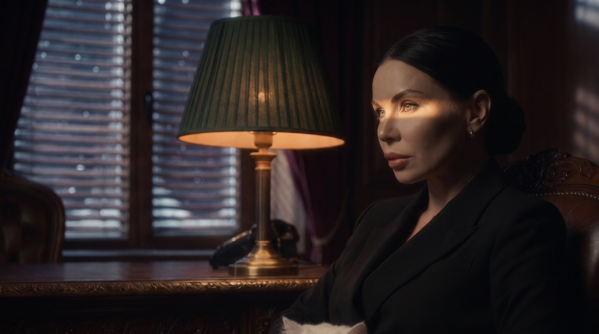
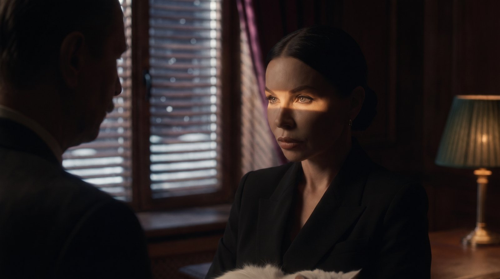
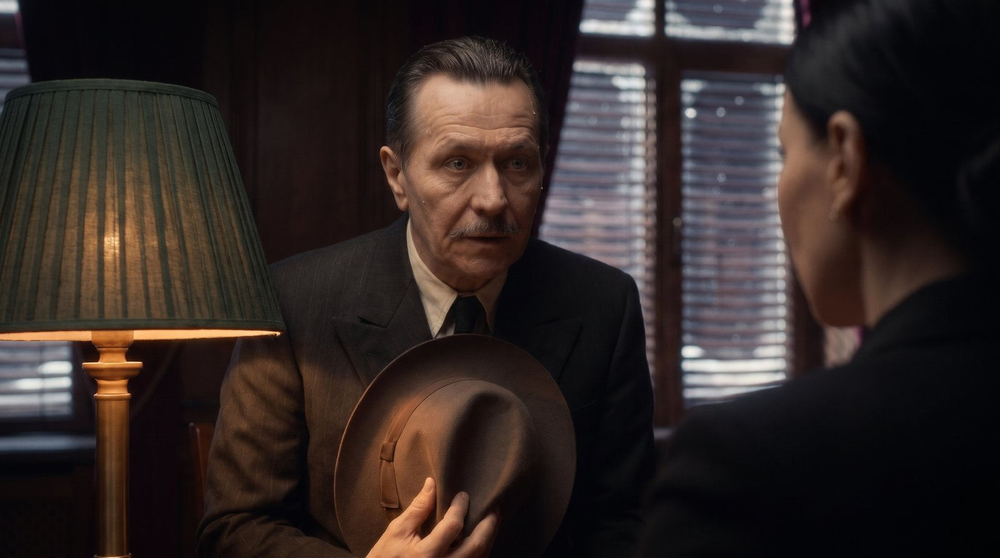
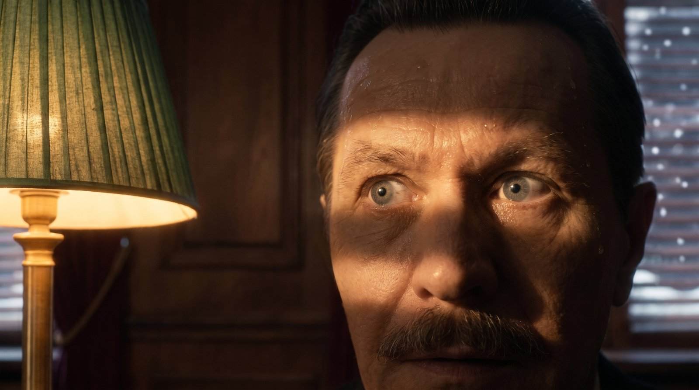
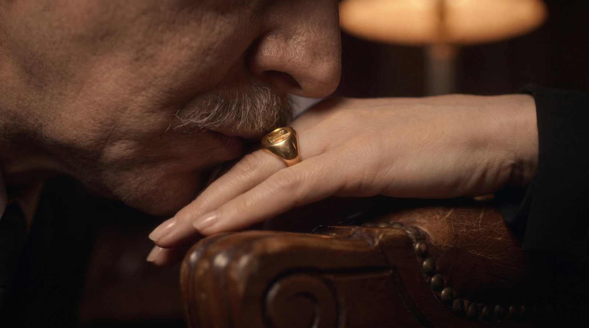
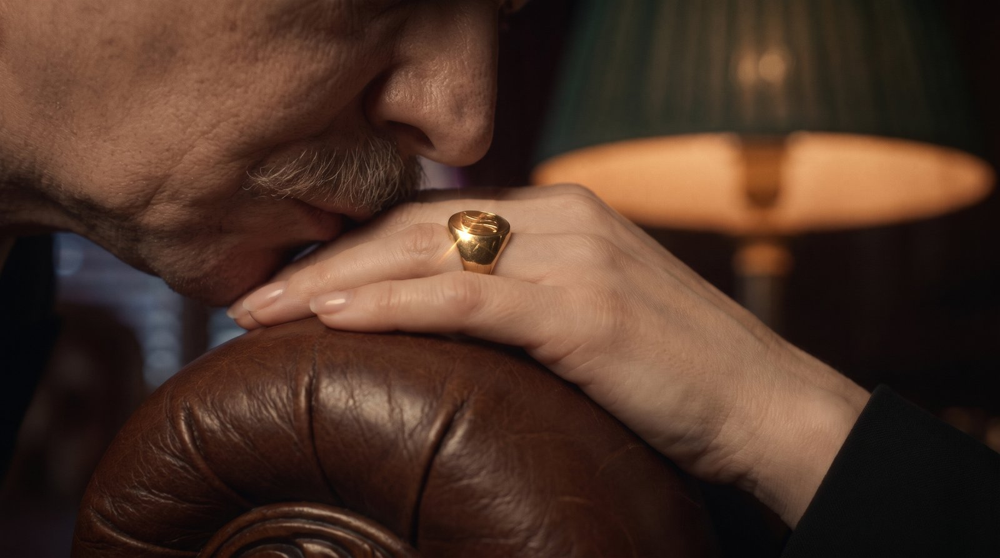

«Крёстная мать», часть 1: 3 сцены
Сначала утверждаем картинки, потом оживляю в Veo. Все клипы разговора начинаются и заканчиваются одним кадром, поэтому лица и комната не уедут.
Сцена 1. Вилла

Готовое вступление: Columbia, вилла, вальс, «КРЁСТНАЯ МАТЬ».
Сцена 2. Стол: «Личное дело», «Компромат»

Под музыку, без слов. Дым сигары, тикают часы.
Сцена 3. Разговор: общий план (выбран B)

Крупно Настя: выбери 1 или 2

Свет полосой на глазах, лампа рядом.

Через его плечо: он тёмным силуэтом слева.
Крупно он

Сжимает шляпу, капля пота на виске. Настя спиной справа.
Его глаза

Испуганный взгляд, полоса тени от жалюзи.
Финал: поцелуй руки, выбери 1 или 2

Ближе, перстень в центре.

Чуть шире, видна зелёная лампа.
Монтаж разговора
Общий план. Он: «Крёстная… мне очень нужен Дед Мороз. Это вопрос жизни и смерти. Я прошу тебя… помоги».
Крупно Настя. «Значит, я правильно поняла? Ты, сука, посмел явиться в мой дом ночью… и просить у меня Деда Мороза?» Его глаза на «На самую горячую дату?»
Крупно он. «Прости, Крёстная мать. Я сделаю всё что угодно».
Общий план → крупно Настя. «Ладно. Я пойду тебе навстречу. Но ты будешь мне должен».
Поцелуй руки. Вступает тема любви.